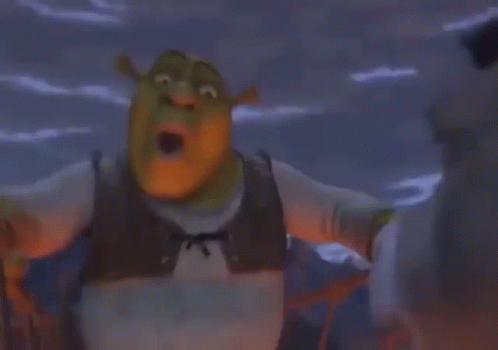

What are the features of the YTPoops?
Media sources of YouTube Poops include television shows, movies, anime, cartoons, commercials, video games, music videos, and other videos obtained from YouTube or elsewhere. A typical YouTube Poop uses visual and auditory effects to alter the underlying work, as well as rearrangement of individual clips. The most common of such rearrangement being "sentence-mixing", a form of editing in which dialogue is rearranged or chopped up to form new, often humorous dialogue—drawing humour from the unexpected changes to usually well-known source dialogue. Some of these videos may involve completely or partially repurposing sources to create or convey an often self-aware story, while others follow a non-linear narrative, and some may contain no storyline at all, instead regarded among the lines of surreal humour and artistic experimentation. To this degree, a YouTube Poop may even consist solely of an existing video, sometimes modified, repeated in a slowed or remixed loop. In many cases, YouTube Poops utilize a bizarre sequence of elements which may entertain, confuse, or irritate, depending on the viewer. Associate professor of cultural anthropology at Kansas State University, Michael Wesch, has defined YouTube Poops as "absurdist remixes that ape and mock the lowest technical and aesthetic standards of remix culture to comment on remix culture itself".1
YTP can often be derivative in the sense that the work of one artist (or, within the community, pooper) is sometimes used as the underlying work for another video; this can be recirculated and lead to the creation of "YTP tennis" videos, named for how they exist in rounds where the original video accumulates edits and alterations. Lawrence Lessig, Professor of Law at Harvard Law School, compared this aspect to a form of call and response, here seen as being prominent within remix culture.2 Another prominent type of video in the community is known as a "collab", wherein a group of YouTube Poopers' videos are compiled to make a longer, often feature-length video. Most of the time, the videos featured are made exclusively for the collab and are not uploaded to YouTube prior to the collab's release.
Certain techniques are usually apparent in every YouTube Poop video.3 These techniques have been coined as 'Poopisms.' They do not refer to the source material, but how the source material is treated. The techniques are as follows;
- Ear Rape: Volume is maxed out and distorted. The intention is generally to annoy or overwhelm. This genre has also appeared in some MLG montage parodies.
- Stutter Loop: A short piece of video is looped in order to call attention or emphasize something.
- Stutter Loop Plus: A stutter loop with random effects added.
- Stutter Loop Minus: A stutter loop with only audio.
- Sentence Mixing (sometimes called Word Splicing): Words (or individual parts) are cut and mixed with other words, often to create profanity or entirely new sentences.
- Spadinner: A blanket term used to refer to the outdated and overused sources such as Super Mario World (especially the episode Mama Luigi), Hotel Mario, and The Wand of Gamelon. This technique eventually led to the creation of sentence mixing.
- Advanced Spadinner: Words are cut and mixed with other words that have been cut. All words are from the same video. An example is James Can't Spell Dyslexia, Because He Has Dyslexia. This method was used to make the teacher say "Hey class smell my a**" instead of "Hey class spell day" "spell" was mixed with other words in the video to make "smell" and "a**" is an edited version of "class"
- Classic YTPMV: A sample is sequenced to an audio track to vaguely simulate something like “singing.”
- YTPMV: Notes in source materials are pitch shifted to replicate music
- CD-I: The Phillips CD-I is a CD-based console from the '90s. Many of the older sources are derived from this console.
- MLG Montage: Despite being almost 2 separate things, MLG is actually an incredibly large subcategory that started from YTP.
- Object Duplication: One or more objects in a video are duplicated.
- Image Addition: Images are added to a video, often to create dark humor or NSFW content.
Source 2 ↗
Source 3 ↗